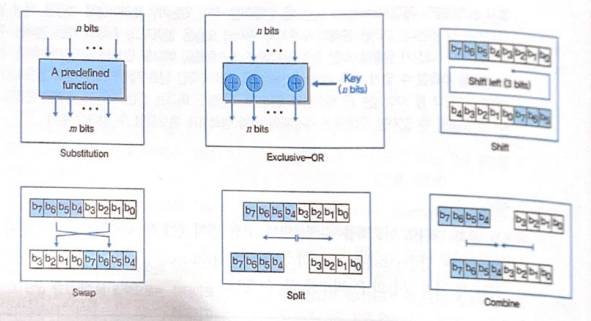
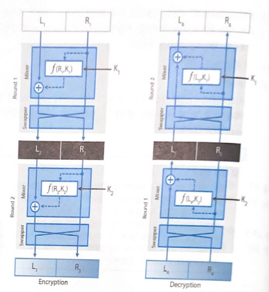
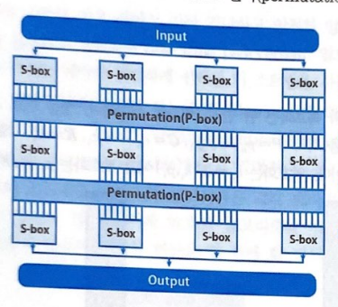

SECTION 3. 대칭키 암호
1. 현대 대칭키 암호
현대 블록 암호
개요와 구성요소
- 개요
-
-
- 확산과 혼돈
-
-
- diffusion
- 평문의 통계적 성질을 암호문 전반에 퍼뜨려 숨기는 것을 말한다. 암호화 알고리즘에 대해 추측하는 것을 어렵게 하는 성질이다.
-
- confusion
- 암호문과 키의 상관관계를 숨기는 것을 말한다. 암호문을 이용해 평문의 내용을 예측하기 힘들게 한다.
- 현대 블록 암호는 이 성질들을 만족시키기 위해 P-box와 S-box, XOR 연산, shift, split, swap 등의 요소를 결합하여 설계된다.
- P-box
-
- 고전 전치 암호를 병렬적으로 수행하는 전치 요소를 P-box라고 한다. 평문에 대해 문자 단위로 암호화하는 역할을 수행한다.
- straight P-box, expansion P-box, compression P-box 3 가지가 존재한다.
-
- compression P-box
-
- 입력 비트가 출력 비트보다 많은 P-box를 말한다.
- 입력 비트 중 일부는 소실되어 출력되지 않으며, 이를 이용해 다음 단계에서 입력되는 비트의 수를 줄이고자 할 때 사용된다.
-
- expansion P-box
-
- 입력 비트가 출력 비트보다 적은 P-box를 말한다.
- 입력 비트는 한 개 이상의 출력 비트와 연결되며, 다음 단계에서 입력 비트의 양을 증가시키고자 할 때 사용된다.
-
- 역함수
- straight P-box는 역함수가 존재하지만, 나머지 P-box는 역함수가 존재하지 않는다. 대응 형태의 차이로 보인다.
- S-box
-
- 치환 암호의 역할을 하는 요소를 S-box라고 한다.
- 치환 암호의 역할을 하지만 입력 비트의 수가 출력 비트의 수와 달라도 상관이 없다.
- P-box와 마찬가지로 역함수가 존재할 수도, 존재하지 않을 수도 있다. 만약 존재한다면, 역시 P-box와 동일하게 입력 비트의 수와 출력 비트의 수와 같을 것이다.
- S-box는 Subtitution, Exclusive-OR, Shift, Swap, Split, Combine 등으로 이뤄져 있다.

S-box의 구성요소
- Product Chipers(합성 암호)
-
- 치환, 전치 등의 요소를 결합해 만든 복합적인 암호를 합성 암호라 한다.
- Shannon이 도입한 확산과 혼돈의 성질이 합성 암호의 주요 개념이며, 이 암호는 이 성질들을 갖도록 만들어져야 한다.
- 합성 암호는 확산이란 개념에 의해 암호문과 평문 사이의 관계가 숨겨질 것이며, 혼돈이라는 개념에 의해 암호문과 키의 관계가 숨겨질 것이다.
- 합성 암호는 여러 개가 중첩되어 반복되는 혀애로 사용되기도 한다. 이때 하나의 합성 암호가 진행되는 과정을 라운드라 하며, 라운드의 수는 합성 암호가 중첩된 수로 간주할 수 있다.
- Feistel
-
-
- Feistel 구조
-
- 앞서 합성 암호의 라운드에 대한 개념을 간단하게 확인했었다. Feistel 구조는 라운드가 3개 이상으로 이뤄져 있으며, 라운드의 수는 짝수이다.
- 현재까지 구조적인 문제점이 발견되지 않았으며, 수행속도가 빠르고 HW, SW에서의 구현이 용이하다는 장점이 있다.
-
- Feistel 진행방식
-
Feistel 구조의 진행방식은 암호화, 복호화 과정이 모두 동일하다.
- 입력값을 좌우 블록을 분할한다.
- 두 블록 중 하나에 라운드 함수를 적용시킨 후, 이것을 다른 블록에 적용시키고, 좌우 블록을 서로 교환한다.
- 이것을 각 라운드마다 실시한다.
-
-
- Feistel 암호

Feistel 암호의 구조와 암호화, 복호화 진행방식
-
- Feistel 구조 이용해 만든 암호를 Feistel 암호라 한다.
- 평문 블록의 길이, 키의 길이, 라운드의 수에 의해 Feistel 암호의 강도가 결정된다. 이때 충분한 안정성을 보장받기 위해서는 평문 블록의 길이는 64bit 이상, 128bit의 키 길이, 16라운드 이상이어야 한다.
- Feistel 암호는 많은 블록 암호 알고리즘에서 이용되고 있다. 대표적으로 AES선정 당시 남은 5개의 후보 중 MARS, RC6, Twofish에서 Feistel 암호가 적용되었다.
- SPN
-

SPN구조
- 고전 암호의 일정인 Subtitution Chiper와 Permutation Chiper를 중첩하여 만든 것으로, "여러 암호를 중첩하는 것이 개별 함수로 이루어진 암호보다 안전하다"라는 샤넌의 이론에 근거하여 개발된 것이다.
-
진행 과정
- 입력값을 여러 개의 작은 블록으로 나눈다.
- 각각의 블록을 각각의 S-box에 입력해 Subtitution Chiper의 과정을 거치게 만든다.
- S-box를 이용해 대치시킨 것을 P-box를 이용해 Permutation Chiper의 과정을 거치게 만든다.
- 이 과정을 암호화, 복호화가 끝날때까지 반복한다.
- 블록 암호의 구현과 관련하여 고려해야 할 사항들
-
-
- 블록의 크기와 키의 길이
- 블록의 크기가 클수록, 키의 길이가 길수록 더 강력한 보안체계를 만들 수 있지만, 그만큼 암호화, 복호화의 속도는 느려지게 된다. 그렇기 때문에 합리적인 크기와 길이를 취해야 하며, 현재 128비트가 크기와 길이에 대한 합리적인 값으로 여겨지고 있다.
-
- 라운드 수
- 라운드 역시 그 수가 많을수록 보안은 더 강력해질 것이다. 하지만 특정 시점부터는 효율에 대한 유효한 차이가 발생하지 않을 것이기에 적절한 라운드 수를 취해 적절한 효율을 가지도록 해야 할 것이다. 현재 라운드 수는 16이 전형적이다.
-
- 서브키 생성 알고리즘과 라운드 함수
- 복잡할수록 암호 해독이 어려워진다. 소요 시간이 길어질 뿐더러, 복잡할수록 그 관계를 파악하기 힘들기 때문이다.
블록 암호에 대한 공격
-
- Differential Cryptanalysis(차분 분석법)
- 두 개의 서로 다른 평문들을 이용해 이를 암호문으로 변화했을 때, 이 암호문들의 비트의 차이를 이용해 암호화에 사용되는 키를 찾아내는 방법이다. 즉, 평문이 암호문으로 변환될 때, 어떻게 변하는지를 파악하여 암호를 해독하는 방법이라 할 수 있다.
-
- Linear Cryptanalysis(선형 분석)
- 암호 알고리즘 내부의 선형적 관계를 찾거나, 혹은 비선형적인 구조를 근사를 이용해 선형화시킴으로써 암호화 키를 찾는 방법이다.
-
- Exhaustive key search(전수 공격법)
- 암호화하는 과정에서 일어날 수 있는 모든 경우에 대해 조사하는 방법이다. 전수 조사의 개념과 유사하게 생각하면 된다.
난 그리고 디피, 헬만이 싫다
-
- Statistical analysis(통계적 분석)
- 통계적인 자료를 이용하여 분석하는 방법이다.
-
- Mathematical analysis(수학적 분석)
- 암호 알고리즘을 분석하다보면 특정 수학 공식이 도출되게 된다. 이 점을 고려하여, 수학적인 이론을 이용해서 암호를 해독하고자 하는 방법이다.